加賀の人達は百万石という言葉がお好きなようである。
ホテルや料亭などにもその名は冠せられるし、土産物などにもよく使われている。
もしかしたら私達（石川県民以外）の持つ加賀のステロタイプがそのまま投影されているだけなのかもしれないが（例えば浅草でポリエステルの着物と神風鉢巻きが売られているように）、それ以外にもお城の形の個人住宅や店なども多く、何となく徳川の外様いちびりに耐えた誇りのようなものと豪快さ具合があちらこちらに滲み出ていて、ゴージャスなお土地柄を醸し出している。
そのゴージャス具合にとどめを刺した感のあるスポットが加賀市のユートピア加賀の郷である。
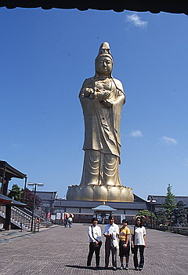
ここは所謂仏教テーマパークである。
しかし「かつてない総合文化レジャー施設」という謳い文句が示す通り、ジャングル風呂が御自慢の温泉があり、遊園地や美術館、博物館、さらにはパットゴルフやプールまである「壮大なスケールを誇るビッグプロジェクト」なのだ。そして一日で遊びきれなかった人の為にホテルまであるのだ。
勿論カラオケ、レストラン、土産屋も抜かりはない。
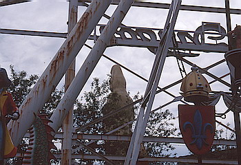 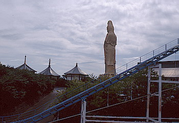
で、このユートピア加賀の郷の心臓部、大観音を擁する加賀寺と呼ばれるエリアに足を踏み入れてみよう。
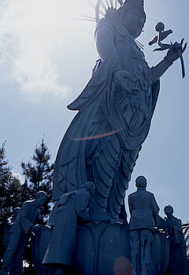
観光用なのか本堂で拝む坊さんの読経の声がスピーカーで境内中に鳴り響いている。
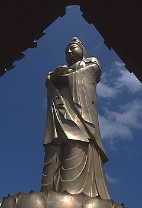
ここの目玉は何といっても高さ73ｍの金ピカ大観音。ちなみに園内の説明には抱いている幼児の大きさが奈良の大仏さんと同じ位の大きさだとか。
なんでみんな俺の大好きな奈良の大仏さんをライバル視するんだよお。
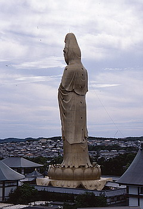
という訳で内部へ。金ピカの仏像が並ぶ。
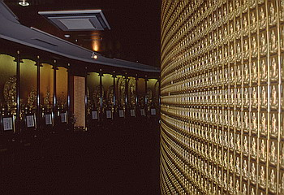
参拝者が奉納し、壁に張り付ける観音パネルの数が尋常でない。ホントにこんなに参拝者来たのかあ、半分くらいサクラじゃねえのか、と疑ってしまう。
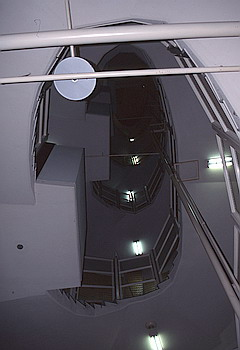
上に登っても高が知れているので、今回はパス。螺旋階段きつそうだし。
で、大観音の裏手の体育館位の大きさの建物へ。
入って吃驚、そこは釈迦の一生を物語った巨大ジオラマ群。
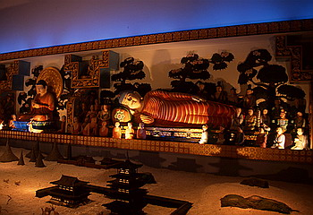 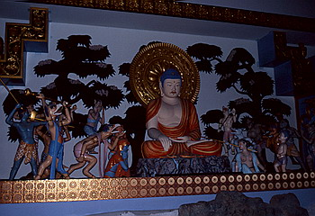
その上にある建物の幅一杯の40ｍ特大スクリーンで音と映像の一大スペクタクル観音浄土が演出されている。
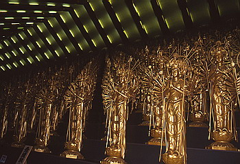
そしてその建物の残り半分は加賀三十三間堂、そのものズバリ金ピカの1188体の千手観音が25段94列にズラリと並ぶ超ゴージャス空間だ。
恐らくFRPかなんかで出来ている新品の観音さまがならぶその様はもうウオーホールのキャンベルスープの世界。仏像界のポップアートといった雰囲気。
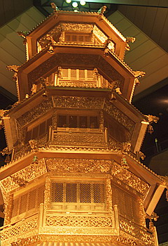 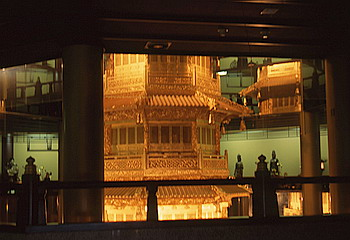
その他、巨大な梵鐘（勿論金ピカ）を鬼が支えるというグ−な造りの梵鐘仏堂、17ｍの金ピカの五重の塔が吹き抜けに鎮座し、それを囲んで仏像が並ぶ瑠璃光殿、観音ピラミッド状態の金色堂などなど。
とにかくどれもが噴水やカラーライトなどを惜しげもなく使った、もの凄く金のかかったものなのである。
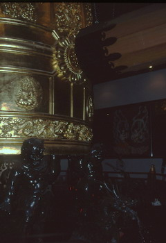 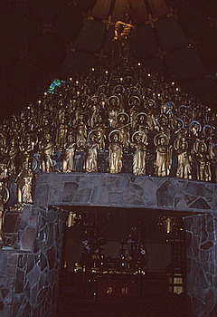
あまりにもトウーマッチなこの施設、一説によると経営母体のカイシャ（やっぱここ税金対策？）が御時世により倒産してしまい、もしかしたら行くなら今！の施設なのかもしれない。
ちなみにその他の施設なのだが風呂の方はまあ、普通の健康ランドといったところだが、遊園地に関してはお寒い限り。
遊園地貸し切り状態というのを体験したい方はぜひ行ってみるべし。
珍寺大道場 HOME